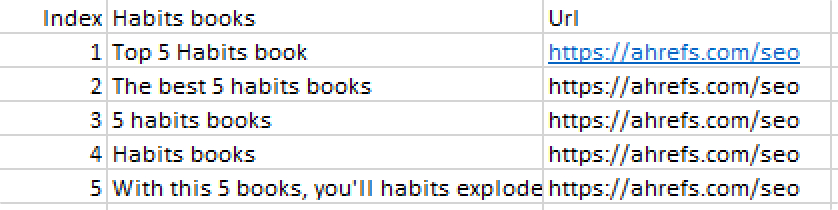

Nijaz Andelić
Student na Sarajevo School of Science and Technology / University of Buckingham
Disciplinovan, harizmatičan, hrabar, spreman preuzeti rizik i voljan učiti nove stvari sa ogromnom željom za unapređenjem sebe, svojih prijatelja i poznanika i svoje države.
ZenDev je firma koja kodira brilijantne ideje u uspješne online biznise
Za ZenDev sam čuo prije nekoliko godina. Međutim prva dodirna tačka je bila prošle godine na Hack at Home Mostar hacaktonu gdje sam upoznao Valeriju Ereš. Ona je osoba sa nevjerovanom harizmom i jednostavno njen govor i njena energija me primamila.
Nakon toga sam malo googlao i “upoznao” Senada Šantića i od tada je krenula moja nevjerovatna želja da budem dio ZenDev-a.
Robinize je SEO alat koji je pomaže kreirati visokorangirani organski promet na sajtu.
Za Robinize sam prvi put čuo kada sam posjetio website ZenDeva. Tada uopšte nisam znao šta je SEO optimization.
Detaljnije sam krenuo istraživati o Robinizeu i SEO optimizaciji kada mi je Haris Husejnović (CEO Robinizea) komentarisao moj prvi LinkedIN post i ulio mi veliku dozu motivacije i samopouzdanja sa njegovim komentarom.
Ljudi žele biti dio nečega, a ne novca ili slave.
01
Ideja?
Napraviti website koji će sadržavati bazu svih knjiga.
02
Zašto je ideja posebna?
Često mi padne na pamet da ukucam: “Top 5 knjiga za zdravu ishranu”, i šta dobijem... Dobijem razne sajtove koji uopšte ne prikazuju ono što ja želim.
Ideja je realizovati ovako nešto, tj. kada se upiše top 5 knjiga o navikama da to zaista izbaci. Da zaista izbaci listu top 5 knjiga. Međutim, to nije kraj.
Ukoliko već na sajtu postoje knjige, zašto ne bismo iskoristili moć naše “popularosti” (u budućnost) i za svaku pomenutu knjigu ostavili review, ocjenu i mogućnost komentara. To bi značajno pravilo dodatni income i dodatne posjete.
03
Kako bi ostavili reviewe?
Što se tiče reviewa, da bismo dobili unikatan kontent (ujedno i napravili bolji seo) koristiti ćemo dobrog prijatelja GPT-a i svaki review koji povučemo iz baze parafrazirati u chatgptu.
04
Interface?
Interface bi slično izgledao Sendavom sajtu za upotrebu riječi u rečenici gdje bi se samo moglo ukucati ime knjige ili kategorija knjige i ono bi automatski izbacilo listu ili review knjige
04
Zašto je ovo dobro?
Razlozi zašto bi ovo moglo biti dobro (Kao SEO projekt):
- Za svaku knjigu imamo posebna sajt (review sajt)
- Za svaku top 5 listu knjiga imamo sajt
- Mnogo backlinkova
- Mnogo keywordova
- Flexibilnost
- Blogovi
SEO je proces optimizacije web stranica i sadržaja
s ciljem
poboljšanja njihove vidljivost
Kako izgleda?
Tabela sa indexima, stranicama i njihovim urlovima poredani po nivou rankiranja-
Kako radi?
Google ima svoje robote i algoritme koji određuju kako će se to sajt fetchati i crawlati.
Keywords
Da svaki sajt bude kako treba indexiran, potrebne su nam keywords.
Seo kontent
Važno je da kontent na stranici bude optimizovan, ima keywordse i čar rečenice koje po kojima bi googlee mogao rankirati.
Lahki SEO
Jedan od lakših SEO-va je On Page Seo koji je u suštini optimizacija brzine sajta, dizajna sajta, responzivosti....
Linkovi su bitni
Google-u smo vrijedniji ukoliko imamo jake linnkove koji linnkaju na našu stranicu.